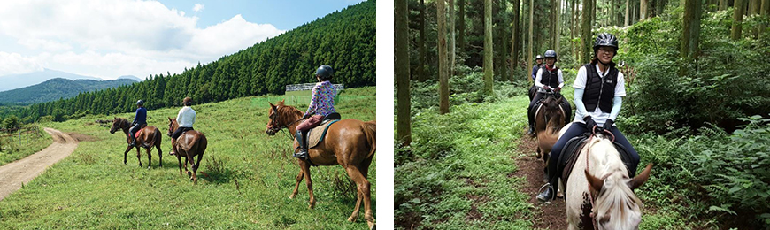
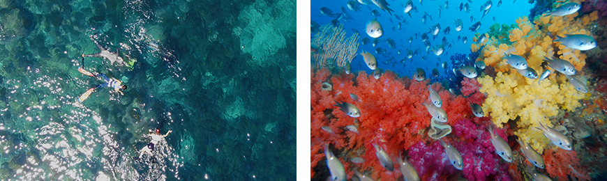

기획취재콘텐츠
- Home
- 제주라이프
- 기획취재콘텐츠
済州型レジャー産業、国内外の観光客を魅了する 1部새로운 글


済州道は名実共にレジャースポーツとアクティビティのパラダイスである。火山噴火により形成された険しい漢拏山から緩やかな丘陵の中山間と広い平野、海に至るまで済州のあちこちには多様なレジャーとアクティビティスポットでいっぱい。多様な形の地形は、済州道がレジャー産業のメッカに生まれ変わることができた最適の環境条件を提供する。一年中穏やかな気候、豊かな風と日射量もレジャー産業の成長には欠かせない中核要素となっている。
観光スポットを回りながら済州の美しい自然を楽しむ旅行は相変わらず好まれているが、さらにもう一歩自然の中に入り込んで全身で体験して実感する旅行も人気が高い。今年の6月、済州観光公社がまとめた「今後の1年、済州旅行計画アンケート」によると、これから旅行で何をするかについての質問に回答者の77.7%は自然景観の観賞、52.6%はトレッキング、12.7%はゴルフ、乗馬などのレジャースポーツと複数回答で答えた。
国内外の観光客を魅了し、済州観光産業における柱の一つをけん引している済州型レジャー産業の特長とその魅力は何だろうか。ゴルフ、乗馬のように済州を代表するレジャースポーツから旅行客の視線を集めて足を止めるトレッキング、ホッピングツアーなど多様なレジャー産業の世界を覗いてみる。
恵まれた自然、その中のグリーンを練り歩く余裕 – ゴルフ
韓国ゴルフ場経営協会の調査によると2020年1月現在韓国で運営中のゴルフ場494か所のうち41か所が済州道にあり、京畿道と江原道、慶尚北道に次いで4番目に多いとのこと。済州道のゴルフ産業は、全国に乱立するゴルフ場同士の激しい競争と会員制ゴルフ場に対する個別消費税免除政策により一時はひるんだこともあるが、今年の新型コロナウイルスウイルスによる需要増と個別消費税の減免政策が復活したことで再び飛躍している。.
自然の中、広々とした屋外スペースで小規模グループ単位で安全に楽しめるスポーツという認識が広がり、事実上海外旅行が出来なくなると、ゴルフ客たちが済州に足を運んだおかげで、新型コロナウイルスの最中にもかかわらず済州のゴルフ場は割りと善戦したと評価される。
今年上半期の済州に入道した観光客は減ったものの、道内からの訪問客が増加したため1~3月のゴルフ場訪問客は35万8550名と昨年同期の37万3067名に比べわずか3.9%減となった。その後、徐々に回復して8月現在の訪問客数は新型コロナウイルス以前に近いレベルに来ている。済州道のゴルフ場は、夏休みシーズンを迎えてフルブッキング(full-booking・予約完了)ケースが相次いで快哉を叫んでいる。
- ザ・CJカップが開催されるクラブナインブリッジの18番ホール(左)、11番ホール(右)の全景。
済州の自然と融合するコースが美しい。 ⓒCJグル -
済州の自然と融合するコースが美しい。 ⓒCJグル -
ゴルフの魅力は低い丘陵地帯、広々とした草原をゆっくりと歩いては集中力を集めて力強いスイングをするのだ。しかし、ここに「済州道」という地域の特性が反映するといくつかの魅力が加わってくる。一年中ゴルフを楽しめる穏やかな気候、きれいな空気、どこからも見える壮大な漢拏山とオルムが並んでいる景色、たまには予想がつかない風とグリーンを走るノロ、世界レベルのコースをもつゴルフ場施設などが済州でのゴルフをさらに楽しくする中核要素として挙げられる。
韓国で初めて開催されたPGAツアーの「ザ・CJカップ@ナインブリッジ」を担当するCJグループスポーツマーケティング部長のキム・ユサンさんによると、出場選手の多くは済州道の自然環境を見事に活かしたコースに賛辞を惜しまず、とくに済州道の風により大きく変化するコースが印象深いと評価するという。ジョーダン・スピース選手は「済州道はすごく美しい。コースをテレビから見たことがあるが練習ラウンドから確認したコースが完璧で、多くの想像力から生まれたコースだと思う。また、風に合わせてティーショットを慎重に打たなければならない。自分によく合いそうなコース」と、インタビューで話した。
このように済州道のゴルフ場には、国内外のゴルフ選手とマニアたちを魅了して持続的に済州へと足を運ぶようにする魅力が溢れている。しばらく低迷していたゴルフ産業を復興させるために、ゴルフ場ごとに多様な商品を開発して積極的なマーケティングを展開するなど、ゴルフ産業界の自主的な努力が必要だという声も大きいが、済州道でしか享受できない恵まれた地形条件と景色は、ゴルフが済州道におけるレジャー産業の柱の一つを担当することができるようにする強みであることは確かである。
馬産業特区の名声がレジャースポーツの名声に – 乗馬&ポロ
最近、済州道と済州観光公社は夏場に済州で楽しめる癒しのコンテンツである「済州ウェルネス観光15選」を発表した。「ウェルネス(Wellness)」とは、ウェルビング(Well-being)と幸せ(Happiness)、健康(Fitness)の合成語で、身体的・精神的・社会的に健康な状態を意味する。自然・森の癒し、ヒーリング・瞑想、ビューティ・スパ、出会い・エンターテインメント・癒しの4つのテーマで構成された15か所の観光スポットには、済州道を代表する体験コンテンツである乗馬も含まれている。
全国初の馬産業特区との名声にふさわしく、済州道内で運営している乗馬場は約58か所に至る。そのほとんどで乗馬教育と体験プログラムを運営しているが、初心者でも容易に習い安全に体験できるため人気が高い。それぞれの乗馬場では馬に乗って乗馬場を回る簡単な体験から、森の道・海辺・山岳コーストレッキングなど多様なプログラムを用意している。

- オッキマテーマタウンの乗馬トレッキングプログラム ⓒオッキマテーマタウン -
ウェルネス観光スポットに選ばれたオッキヒノキ林乗馬の場合、専門コーチの指導に従って馬を厩舎から引っ張ってくることから実際の乗馬まできちんと習える講習乗馬と、総延長10.5kmの杉林の道を馬と一緒に自由に散策するウェスンコース、10月~4月に表善海辺で楽しめる海辺ウェスンコース、午前に出発して城板岳区間まで体験して戻ってくる1日コースの山岳トレッキングプログラムを運営している。乗馬の魅力は、生きている馬と交感するのもあるが、自然の香りが漂う森と海のコースでたまにはゆっくり、たまにはスピードを出して走りながら自然と一つになる感覚を覚えること。
一方、国内で済州でしか楽しめない異色スポーツがあるがそれはポロ。4：4の人数構成で２つのチームが対決するポロは、馬に乗って走りながらマレットと呼ばれるスティックでボールを打ち、相手チームのゴールスポットの中に入れることで勝負を分ける迫力のあるスポーツ。王族や貴族だけが楽しむ高級スポーツの代名詞として知られているが、そのポロを楽しめる韓国ポロカントリークラブが済州道にある。
- 韓国ポロカントリークラブで開催された選手団との交流試合の様子 ⓒ韓国ポロカントリークラブ -
済州市旧左邑杏源里一帯に21万3277m²(約6万4500坪)規模で整備された2010年にオープンした韓国ポロカントリークラブは、世界的にも数えられる施設と装置、システム、サービスを備えていることで名高い。海外有数のクラブを経験したスーパーリッチの選手たちも驚きを隠さないほどだという。
長い間韓国ポロカントリークラブの会員でいるパク・ヨンジュ選手は、「ポロは紳士的で繊細なスポーツでありながらもスポーツとしての機能と社交クラブとしての機能を持ち合わせている。試合のときは頭が真っ白になるほど完全に入り込んで、あらゆるストレスを吹っ飛ばして新しい一週間を生き生きと暮らせるエネルギーが得られるというのがポロの魅力」と説明する。また「ポロカントリークラブが韓国という国を美しく覚えられる象徴的な島の済州に位置していること、海や山などの自然が近くにあるのが大きなメリット」と付け加えた。
歩いて済州の中へ – オルレウォーキング・トレッキング
「ウォーキング」というと頭に思い浮かぶスポットとして済州オルレを挙げる人が多い。最近、文化体育観光部と韓国観光公社が実施した「2019年ウォーキング旅行実態調査」によると、ウォーキング旅行を楽しむ若年層が増えて、いわゆる「一人旅」のトレンドに合わせて「独りウォーキング」旅行を楽しむケースが著しく増えた。また、この1年間一番訪れたウォーキングスポットはやはり済州オルレ(15.9%)という結果となった。
2007年に最初コースをオープンした済州オルレは、済州道を歩いて旅するように整備した長距離の徒歩旅行道を指す名称で、26コース・総延長は425kmに達する。旅行者たちは済州オルレを歩きながら済州の隅々まで見られること、目の前に伸びている道をひたすら歩きながら悩みや複雑な頭の中が整理できるというところが魅力だと挙げられる。
- 済州オルレウォーキングフェスティバルの様子(2019) ⓒ社団法人済州オルレ -
済州オルレを作って管理している「社団法人済州オルレ」は、「歩く人、道の上で生きていく地域民、そして道を貸してくれた自然が共に幸せな道を目指して「遊びながら、休みながら、歩きながら一緒に行く道」を作ることを標榜している。オルレの整備やメンテナンスはもちろん旅行・教育・環境・文化/芸術・地元コミュニティなど多様な分野を活性化するための活動を並行し、毎年オルレウォーキングフェスティバルを開催してオルレを愛する「オルレクン(オルレを歩く者)」が増えていけるように努めている。
オルレウォーキングのほかにもう一つのウォーキング旅行の方法としてはトレッキング が欠かせない。トレッキングは登山とハイキングの中間形態で、すべての装置と荷物を背負って一日に15~20km程度を歩くのが特徴。最近は漢拏山やオルム、サリョニ林道、特定の村などをコースで構成し、済州のクリーンな自然を歩くトレッキングプログラムが脚光を浴びている。トレッキングの長所は済州のクリーンな自然を歩きながらあるがままの自然を五感で満喫すること、そして交通機関を利用して速いスピードで通り過ぎてしまったときにはみかけられなかった済州の魅力がたっぷり感じられることにある。
※ 1) 専門の登山技術や知識がなくても楽しめる山岳自然踏査の旅。頂上に登るのが目的ではなく山の風景を楽しむ旅行の一種で、このような登山をする人をトレッカーと呼ぶ。
出展：NAVER知識百科登山常識辞 (https://terms.naver.com/entry.nhn?docId=1690495&cid=42898&categoryId=42898)
出展：NAVER知識百科登山常識辞 (https://terms.naver.com/entry.nhn?docId=1690495&cid=42898&categoryId=42898)
- フェールラーベンクラシックコリア2019の様子 ⓒフェールラーベンクラシックコリア -
その一例として、スウェーデンのアウトドアブランド支店のフェールラーベンコリアは、昨年済州でトレッキング大会の「フェールラーベンクラシックコリア2019」を開催した。関係者によると、スタッフを除いて計400名以上が参加した2泊3日スケジュールの漢拏山とトゥルレ道コースは難度が高い方だが、済州の驚くべき景観から自然を愛する方法を学ぶ癒しの時間を提供することにより、国内外の参加者みんなに大きな満足が得られたという。
このように歩いて済州を満喫したい旅行者が増えている中、最近は「ウォーキング旅道の整備・管理および支援についての法律案」が発議するなど、済州を含む全国の「歩く道」をしっかり管理・支援するための制度が設けられるものとみられる。国規模で後押しすることによりさらに安全でしっかりとしたウォーキング旅行文化が活性化することを期待する。
済州のクリーンな海が与えるプレゼント – ホッピングツアー
済州道は全面が海に囲まれていて、数多くの海水浴場と独特な水中秘境など多様な海洋レジャーのインフラを備えているため、韓国における海洋レジャーの最適地として指あげられる。2018年に道が調査・発表した「水中秘境10選」がその代表例で、海中洞窟・アーチ・柱状節理・海底噴火口・軟サンゴの群生地などを新しい水中観光商品として発掘し、その美しさを広く発信した。
このように美しい資源で満ちている海を背景に、最近観光客たちの間で話題になっているアクティビティがあるがそれはホッピングツアー。ホッピングツアーとは、船に乗って海への出ていきシュノーケリングやダイビングをして海を楽しみ、水中の景観と魚を観賞することをいう。よく東南アジア地域の観光商品として広く知られているが、済州道でも楽しめるため人気を集めている。
- ホッピングツアーに出る船の様子 ⓒディスカバー済州-
代表商品として、済州のアクティビティ専門企画・運営会社のディスカバー済州で運営する「ポレナンゲホッピングツアー」がある。ポレナンゲホッピングツアーは、2018年にローンチしてから観光客たちに爆発的な反響を呼び起こした。ポレナンゲは、西帰浦市に位置している浦木港を指す済州語で、浦木港から地元住民の漁船を使って天然記念物第18号に指定されたソプ島まで移動、クリーンな海中のサンゴと魚の群れを観賞する活動である。体験客たちは海の下に隠された秘境が与える美しさと驚異に感心するという。

- シュノーケリングをしながら海中の秘境が観賞できる ⓒディスカバー済州-
ポレナンゲホッピングツアーは、海洋水産部が主宰する第4回優秀海洋観光商品公募展で優秀商品に選ばれたこともある。ディスカバー済州は、ポレナンゲホッピングツアーの成功に足がかりにして沙係浦口から出発する兄弟島ホッピングツアーもローンチしている。兄弟島ホッピングツアーは地元の海女と一緒にするプログラムで、より安全にツアーが楽しめる。このようにディスカバー済州の体験プログラムは、地元住民のインフラを活かして彼らは持続的に収益を出せるような方式で運営されるのが特徴といえる。
済州型レジャー産業の成長、今後も続くはず
前述したゴルフや乗馬・ポロ、オルレウォーキングとトレッキング、ホッピングツアーのほかにも済州には、賦存する環境資源を活かした数多くのレジャースポーツやアクティビティが行われている。専門家たちはレジャースポーツの種類を多様化することも重要だが、新型コロナウイルス時代を迎えて非対面サービスへと切り替えるなど時代と消費者のニーズに合わせた商品を作る作業を並行しなければならないとアドバイスする。済州の観光業界における危機をチャンスにするためには、今後もさらに多様なレジャースポーツとアクティビティが発掘・開発されることを期待する。
다음글